<!DOCTYPE html>
<html lang="ml">
<head>
  <meta charset="utf-8">
  <meta name="viewport" content="width=device-width, initial-scale=1.0">
  <title>Pages 61-80 - Class 9 Social science 2</title>
  <style>

:root {
  --bg-color: #fcfcfd;
  --card-bg: #ffffff;
  --text-color: #1e293b;
  --text-muted: #64748b;
  --primary-color: #0284c7;
  --primary-light: #e0f2fe;
  --border-color: #e2e8f0;
  --radius: 10px;
  --shadow: 0 4px 6px -1px rgb(0 0 0 / 0.05), 0 2px 4px -2px rgb(0 0 0 / 0.05);
}

body {
  font-family: -apple-system, BlinkMacSystemFont, "Segoe UI", Roboto, "Noto Sans Malayalam", "Manjari", "Gayathri", sans-serif;
  background-color: var(--bg-color);
  color: var(--text-color);
  line-height: 1.8;
  font-size: 1.1rem;
  margin: 0;
  padding: 0;
}

.container {
  max-width: 860px;
  margin: 0 auto;
  padding: 2.5rem 1.5rem 5rem 1.5rem;
}

header {
  margin-bottom: 2.5rem;
  padding-bottom: 1.5rem;
  border-bottom: 2px solid var(--border-color);
}

.badge-row {
  display: flex;
  gap: 0.5rem;
  margin-bottom: 0.75rem;
  flex-wrap: wrap;
}

.badge {
  display: inline-block;
  font-size: 0.75rem;
  font-weight: 700;
  text-transform: uppercase;
  letter-spacing: 0.05em;
  padding: 0.25rem 0.65rem;
  border-radius: 9999px;
  background: var(--primary-light);
  color: var(--primary-color);
}

.badge-medium {
  background: #fef3c7;
  color: #b45309;
}

.badge-class {
  background: #dcfce7;
  color: #15803d;
}

h1 {
  font-size: 2.1rem;
  font-weight: 800;
  margin: 0.5rem 0 1rem 0;
  line-height: 1.3;
  color: #0f172a;
}

.nav-bar {
  display: flex;
  justify-content: space-between;
  margin: 1.5rem 0;
  font-size: 0.95rem;
  flex-wrap: wrap;
  gap: 0.5rem;
}

.nav-bar a {
  color: var(--primary-color);
  text-decoration: none;
  font-weight: 600;
  padding: 0.5rem 1rem;
  border-radius: var(--radius);
  background: var(--card-bg);
  border: 1px solid var(--border-color);
  transition: all 0.2s ease;
}

.nav-bar a:hover {
  background: var(--primary-light);
  border-color: var(--primary-color);
}

.nav-bar .disabled {
  color: var(--text-muted);
  pointer-events: none;
  border-color: transparent;
  background: transparent;
}

.page-section {
  background: var(--card-bg);
  border: 1px solid var(--border-color);
  border-radius: var(--radius);
  box-shadow: var(--shadow);
  padding: 2rem;
  margin-bottom: 2.5rem;
}

.page-header {
  display: flex;
  align-items: center;
  justify-content: space-between;
  margin-bottom: 1.25rem;
  padding-bottom: 0.5rem;
  border-bottom: 1px dashed var(--border-color);
}

.page-number {
  font-size: 0.8rem;
  font-weight: 700;
  text-transform: uppercase;
  color: var(--text-muted);
  letter-spacing: 0.05em;
}

.page-content p {
  margin: 0 0 1.25rem 0;
  white-space: pre-wrap;
  word-break: break-word;
}

.page-content p:last-child {
  margin-bottom: 0;
}

.diagram-card {
  margin: 2rem 0;
  text-align: center;
  background: #f8fafc;
  border: 1px solid var(--border-color);
  border-radius: var(--radius);
  padding: 1rem;
  overflow: hidden;
}

.diagram-card img {
  max-width: 100%;
  height: auto;
  border-radius: calc(var(--radius) - 4px);
  display: inline-block;
  box-shadow: 0 2px 4px rgba(0,0,0,0.04);
}

.diagram-card figcaption {
  font-size: 0.85rem;
  color: var(--text-muted);
  margin-top: 0.75rem;
  font-weight: 500;
}

footer {
  margin-top: 3rem;
  padding-top: 2rem;
  border-top: 2px solid var(--border-color);
}

  </style>
</head>
<body>
  <div class="container">
    <header>
      <div class="badge-row">
        <span class="badge badge-class">Class 9</span>
        <span class="badge badge-medium">Malayalam Medium</span>
        <span class="badge">Social science 2</span>
        <span class="badge">Part 1</span>
      </div>
      <h1>Pages 61-80</h1>
      <div class="nav-bar"><a href="part_1_pages_4160.html">← Pages 41-60</a><a href="index.html">☰ Index</a><a href="part_1_pages_8196.html">Pages 81-96 →</a></div>
    </header>
    <main>
<section class="page-section" id="page-61">
  <div class="page-header"><span class="page-number">Page 61</span></div>
  <figure class="diagram-card" id="fig_ch04_p061_01"><figcaption>Figure fig_ch04_p061_01 (Page 61)</figcaption></figure>
  <figure class="diagram-card" id="fig_ch04_p061_03"><figcaption>Figure fig_ch04_p061_03 (Page 61)</figcaption></figure>
  <figure class="diagram-card" id="fig_ch04_p061_04"><figcaption>Figure fig_ch04_p061_04 (Page 61)</figcaption></figure>
  <figure class="diagram-card" id="fig_ch04_p061_05"><figcaption>Figure fig_ch04_p061_05 (Page 61)</figcaption></figure>
  <figure class="diagram-card" id="fig_ch04_p061_06"><figcaption>Figure fig_ch04_p061_06 (Page 61)</figcaption></figure>
  <figure class="diagram-card" id="fig_ch04_p061_07"><figcaption>Figure fig_ch04_p061_07 (Page 61)</figcaption></figure>
  <figure class="diagram-card" id="fig_ch04_p061_08"><figcaption>Figure fig_ch04_p061_08 (Page 61)</figcaption></figure>
  <figure class="diagram-card" id="fig_ch04_p061_09"><figcaption>Figure fig_ch04_p061_09 (Page 61)</figcaption></figure>
  <figure class="diagram-card" id="fig_ch04_p061_10"><figcaption>Figure fig_ch04_p061_10 (Page 61)</figcaption></figure>
  <figure class="diagram-card" id="fig_ch04_p061_11"><figcaption>Figure fig_ch04_p061_11 (Page 61)</figcaption></figure>
  <figure class="diagram-card" id="fig_ch04_p061_12"><figcaption>Figure fig_ch04_p061_12 (Page 61)</figcaption></figure>
  <figure class="diagram-card" id="fig_ch04_p061_14"><figcaption>Figure fig_ch04_p061_14 (Page 61)</figcaption></figure>
  <figure class="diagram-card" id="fig_ch04_p061_15"><figcaption>Figure fig_ch04_p061_15 (Page 61)</figcaption></figure>
  <figure class="diagram-card" id="fig_ch04_p061_16"><figcaption>Figure fig_ch04_p061_16 (Page 61)</figcaption></figure>
  <figure class="diagram-card" id="fig_ch04_p061_17">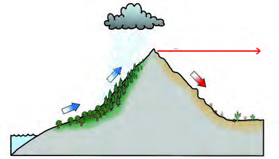<figcaption>Figure fig_ch04_p061_17 (Page 61)</figcaption></figure>
  <figure class="diagram-card" id="fig_ch04_p061_19"><figcaption>Figure fig_ch04_p061_19 (Page 61)</figcaption></figure>
  <figure class="diagram-card" id="fig_ch04_p061_20"><figcaption>Figure fig_ch04_p061_20 (Page 61)</figcaption></figure>
  <div class="page-content">
    <p>61<br>‹­ŒxŽ›ŅŒāųˆœ~‹žŒ›<br>Œ—šŽšȸ¡}‚œŽĹ§ “ų¢xŽų<br>¡‚ڝˆ}›ĚšÄ ŒÃ–žÃsšǮ§<br>†Åƣ„ ‚šž› †„œ‚}ā‘›ž¡}<br>iˆ„Ǵœˆ›Æ Ƃ¢“”›Úsc Œ…DZ<br>gŦDZ›}†œ‘c Œ›‚Œš¢‚š‚›Æ<br>Œ’ †Æssc<br>¡xƭų h<br>sš‘“›Æ ¢yšĞš†šu§ˆžÅ ˆœ~<br>‹žŒ››c ¡x›¢‚š‚›Æ Œ’‹›<br>ڝų<br>“}ڝs›’ÚČ֞Ã<br>eƒ“š<br>ŒÃ–ž›¡źˆ›Ä“šāÆsšĹ§<br>iˆ„Ǵœˆœˆœ~‹žŒ››Æ ¡ˆš‚¡“<br>“ŽĬsšš“Ǚš§e†‹“<br>¡ƀ}ų‚§ ŠcušÇ iÇÚ}›Æ<br>Žžˆ¡ƀ}ų †DZž†ŒÅ„x’›sÇiˆ<br>„Ǵœˆ›¡ź s›’ÚÄ ‚œŽĹ§ Ƃ¢‚DZ<br>s›ă§<br>‚Œ›’§†š}§ fŲ ‚œŽā<br>‘›Æ “Ä¢‚š‚›Æ Œ’ĬšÚ<br>¡Œÿ›cˆœ~‹žŒ››¢Ú§g‚›¡ź<br>f†sžDZcmŚ›Ƽ<br>iˆ„ǵœˆœ†„›sÇ<br>ښĈœ~‹žŒ›¡}pŽˆŽ›¢y„Œš§x›Ņc 3.6 -ƆÆs››Ğǫ‚§<br>x›Ņc 3.6<br>iˆ„ǵœˆœgŦDz¡}ˆŽ›¢y„c(x›ŅsšŽ¡ź‹š“†›Æ)<br>ˆDŽ›ŒvĞc<br>ˆ}›Ěš§<br>ˆ}›ĚšÄ<br>‚œŽ–Œ‚c<br>eŠ›Ú}Æ<br>ŠcušÇ<br>iÇÚ}Æ<br>iˆ„Ǵœˆœˆœ~‹žŒ›<br>s›’Ú§<br>ˆžÅ“vĞc<br>s›’ÚÄ<br>‚œŽ–Œ‚c<br>‚Œ›’§†š}§ sÅĴš}sc mųœ –cǙš†ā‘¡} iÇƂ¢„”ā‘›Æ<br>¡‚ڝˆ}›ĚšÄŒÃ–žÃŒ’‚œ¡ŽsšÄsšŽ¡ŒŦ§?<br>Œ’†›’ÆƂ¢„”āÇ<br>s}›Æ†›ųc hÅƀc<br>“—›¡ăŝų<br>sšǮsÇ<br>ˆÅ“‚ā‘›Æ ‚Ğ› iŽų gŎśÆ i<br>Žų<br>“š v†œ‹“›ă§<br>Œ’¢ŒvāÇ Žžˆ¡ƀ}<br>scˆÅ“‚ā‘¡}sšǮ›†§e‹›ŒtŒš “”ŧ<br>…šŽš‘c Œ’†ƴsc ¡xƭųmųšÆˆÅ“‚ā<br>‘¡}<br>Ƃ‚›Œt“”ŧ<br>‚š’§ų›āų<br>“š<br>¡ˆš‚¡“ hÅƀŽ—›‚Œš‚›†šÆ e“›¡} Œ’<br>s“š›Ž›Úc gŎc Ƃ¢„”ā¡‘<br>Œ’†›’Æ<br>Ƃ¢„”āÇ(Rain shadow regions)mų§ “›‘›Úų<br>sšǮ›†§<br>e‹›ŒtŒš “”c<br>“šv†œ‹“›ă§<br>Œ’¢ŒvāÇ<br>Žžˆ¡ƀ}ų<br>hÅƀ“š—›s‘š<br>sšǮ§<br>s}Æ<br>sšǮ›†§<br>Ƃ‚›ŒtŒš “”c<br>Œ’†›’ÆƂ¢„”c<br>hÅƀ<br>Ž—›‚ŒšsšǮ§<br>ŠšǒœsŽc<br>§ “”c<br>f”“DZނƩ§ŒšŅŒšǫ<br>x›ŅœsŽc¢‚š‚§e}›Ǚš†ŒšÚ›Ƽ</p>
  </div>
</section>
<section class="page-section" id="page-62">
  <div class="page-header"><span class="page-number">Page 62</span></div>
  <figure class="diagram-card" id="fig_ch04_p062_01"><figcaption>Figure fig_ch04_p062_01 (Page 62)</figcaption></figure>
  <figure class="diagram-card" id="fig_ch04_p062_02"><figcaption>Figure fig_ch04_p062_02 (Page 62)</figcaption></figure>
  <figure class="diagram-card" id="fig_ch04_p062_03"><figcaption>Figure fig_ch04_p062_03 (Page 62)</figcaption></figure>
  <figure class="diagram-card" id="fig_ch04_p062_04"><figcaption>Figure fig_ch04_p062_04 (Page 62)</figcaption></figure>
  <figure class="diagram-card" id="fig_ch04_p062_06"><figcaption>Figure fig_ch04_p062_06 (Page 62)</figcaption></figure>
  <figure class="diagram-card" id="fig_ch04_p062_07"><figcaption>Figure fig_ch04_p062_07 (Page 62)</figcaption></figure>
  <div class="page-content">
    <p>62<br>‹šuc-<br>ƾǐ›Ƃ¢„”c (Catchment Area): pŽ †„››¢Ú§ zc p’s›¡Ĺų †›DŽ›‚<br>‹žƂ¢„”Œš§f†„›¡}ƽǏ›Ƃ¢„”c<br>†œÅĹ}c (Drainage Basin): pŽ †„›c e‚›¡ź ¢ˆš•s†„›s‘c iÇ¡ƀ}ų<br>Ƃ¢„”¡Ĺ†œÅĹ}c (Drainage Basin) mų “›‘›Úų<br>z“›‹šzsc (Water Divide): ŽĬ§†œÅĹ}ā¡‘ ‚ƣ›Æ¢“Å‚›Ž›Úųe‚›Åś<br>¢Žt¡z“›‹šzscmų“›‘›Úų<br>x›ŅśÆ †›ų§ iˆ„Ǵœˆœˆœ~‹žŒ›¡} ¡ˆš‚“š xŽ›“§ ˆ}›<br>̚§ †›ų§ s›’¢ÚšĞš¡ų§ Œ†Ǡ›š›¢Ƽ. g‚›¡ iÅų<br>‹šuŒš§ ˆDŽ›ŒvĞc iˆ„Ǵœˆœ gŦDZ›¡ Ƃ…š† z“›‹šz<br>sŒš§ (Water Divide) ˆDŽ›ŒvĞcˆDŽ›ŒvĞ“c Œ…DZių‚‚}ś¡<br>Œ†›Žs‘c Ɨ› sųsÇ “¡Ž †œ‘ų eŽš“› †›Žc<br>¢xÅų§iˆ„Ǵœˆ›¡†œ¡Žš’Ú›¡† Œžųš›‚›Ž›Úų<br>z s›’¢Úš¡Ğš’s›ŠcušÇiÇÚ}›Æ¢xŽųiˆ„Ǵœˆœ†„›sÇ<br>z ˆ}›Ěš¢š¡Ğš’s›eŠ›Ú}›Æ¢xŽųiˆ„Ǵœˆœ†„›sÇ<br>z “}¢Úš¡Ğš’s›Œ†›cucu›c ¢xŽų†„›sÇ<br>s›’¢Úš¡Ğš’sųiˆ„ǵœˆœ†„›sÇ<br>s›’¢Úš¡Ğš’sų iˆ„Ǵœˆœ †„›s¢‘¡c zŶ¡Œ}Úų‚§<br>ˆDŽ›ŒvĞśš§<br>Œ—š†„› ¢uš„š“Ž› ÕǑ sš¢“Ž› mųœ †„›s‘c  e“¡}<br>¢ˆš•s†„›s‘Œš§ iˆ„Ǵœˆœˆœ~‹žŒ›¡ sœ›Œ›ă§ s›’ڝ„›”<br>›Æ p’s› s›’ÚÄ ‚œŽ–Œ‚Ĺ›ž¡} ŠcušÇ iÇÚ}›Æ<br>¡xų¢xŽų‚§h†„›s¡‘–cŠŰ›ăƂ…š†“ǘ‚sLjЛs<br>¢†šÚ› Œ†Ǡ›šÚž (ˆĞ›s3.1)<br>s›’¢Úš¡Ğš’sųƂ…š†iˆ„Ǵœˆœ†„›s¡‘ ‚›Ž›ă›Ě§ ‹žˆ}¢”t<br>ŽĹ›Æ(My Own Atlas) iÇ¡ƀ}Ĺž</p>
  </div>
</section>
<section class="page-section" id="page-63">
  <div class="page-header"><span class="page-number">Page 63</span></div>
  <figure class="diagram-card" id="fig_ch04_p063_01"><figcaption>Figure fig_ch04_p063_01 (Page 63)</figcaption></figure>
  <figure class="diagram-card" id="fig_ch04_p063_02">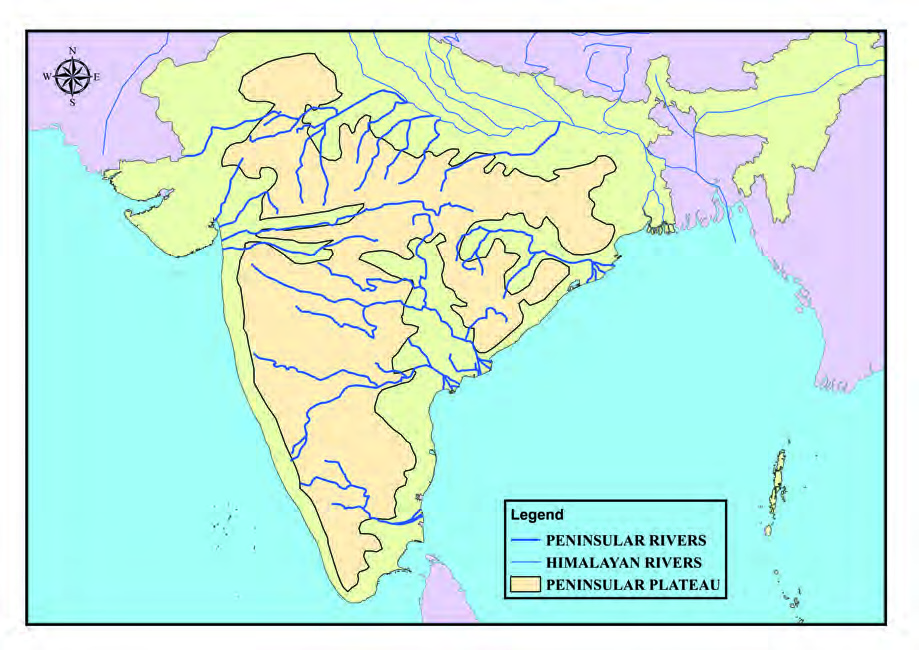<figcaption>Figure fig_ch04_p063_02 (Page 63)</figcaption></figure>
  <div class="page-content">
    <p>63<br>‹­ŒxŽ›ŅŒāųˆœ~‹žŒ›<br>†„›<br>i„§‹“c<br>Ƃ…š†<br>¢ˆš•s†„›sÇ<br>†„œ‚}c<br>iǡښǬų<br>–cǚš†āÇ<br>Œ—š†„›<br>š§ˆžŽ›¡–›—š“<br>yŜ–§u€§
<br>gŠ§¡}Æ<br>yŜ–§u€§<br>p›•Œ…DZƂ¢„”§<br>¢uš„š“Ž›<br>Œ—šŽšȸ›¡<br>†š–›s§<br>Ƃכ‚<br>gůš“‚›”ŠŽ›<br>Œ—šŽšȸ<br>Œ…DZƂ¢„”§<br>fŲšƂ¢„”§<br>ÕǑ<br>Œ—šŽšȸ›¡<br>Œ—šŠ¢”ǴÅ<br>‚cu‹ŝ‹œŒ<br>¡sšƫ<br>Œ—šŽšȸ<br>sÅĴš}sc<br>fŲšƂ¢„”§<br>sš¢“Ž›<br>Ɩǥu›Ž›ÚųsÇ<br>sÅĴš}sc
<br>sŠ†›‹“š†›<br>eŒŽš“‚›<br>sÅĴš}sc<br>‚Œ›’§†š}§¢sŽ‘c<br>ˆĞ›s 3.1<br>–›Ű†„›<br>–›Ű†„›<br>›<br>›<br>–ŠÅŒ‚›<br>–ŠÅŒ‚›<br>–›Ű§<br>–›Ű§<br>¡sÄ<br>¡sÄ<br>¢–šÃ<br>¢–šÃ<br>všvŽ<br>všvŽ<br>ƖǦˆŅ<br>ƖǦˆŅ<br>†Åƣ„<br>†Åƣ„<br>‚šž›<br>‚šž›<br>¢uš„š“Ž›<br>¢uš„š“Ž›<br>Œ—š†„›<br>Œ—š†„›<br>Õǒ<br>Õǒ<br>eŠ›Ú}Æ<br>eŠ›Ú}Æ<br>ä„ǵœˆ§<br>ä„ǵœˆ§<br>gŦDz<br>gŦDz<br>iˆ„ǵœˆœ†„›sÇ<br>iˆ„ǵœˆœ†„›sÇ<br>ŠcušÇ<br>ŠcušÇ<br>iÇÚ}Æ<br>iÇÚ}Æ<br>–žx›s<br>iˆ„ǵœˆœ†„›sÇ<br>—›ŒšÄ†„›sÇ<br>iˆ„ǵœˆœˆœ~‹žŒ›<br>xƠÆ<br>xƠÆ<br>¡Š‚§“<br>¡Š‚§“<br>sš¢“Ž›<br>sš¢“Ž›<br>x›Ņc3.7<br>MAP NOT TO SCALE<br>‚cu‹ŝ<br>‚cu‹ŝ</p>
  </div>
</section>
<section class="page-section" id="page-64">
  <div class="page-header"><span class="page-number">Page 64</span></div>
  <figure class="diagram-card" id="fig_ch04_p064_01"><figcaption>Figure fig_ch04_p064_01 (Page 64)</figcaption></figure>
  <figure class="diagram-card" id="fig_ch04_p064_03"><figcaption>Figure fig_ch04_p064_03 (Page 64)</figcaption></figure>
  <figure class="diagram-card" id="fig_ch04_p064_04"><figcaption>Figure fig_ch04_p064_04 (Page 64)</figcaption></figure>
  <figure class="diagram-card" id="fig_ch04_p064_05"><figcaption>Figure fig_ch04_p064_05 (Page 64)</figcaption></figure>
  <figure class="diagram-card" id="fig_ch04_p064_06"><figcaption>Figure fig_ch04_p064_06 (Page 64)</figcaption></figure>
  <figure class="diagram-card" id="fig_ch04_p064_07"><figcaption>Figure fig_ch04_p064_07 (Page 64)</figcaption></figure>
  <figure class="diagram-card" id="fig_ch04_p064_08"><figcaption>Figure fig_ch04_p064_08 (Page 64)</figcaption></figure>
  <figure class="diagram-card" id="fig_ch04_p064_09">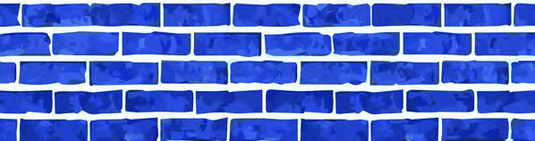<figcaption>Figure fig_ch04_p064_09 (Page 64)</figcaption></figure>
  <figure class="diagram-card" id="fig_ch04_p064_11"><figcaption>Figure fig_ch04_p064_11 (Page 64)</figcaption></figure>
  <div class="page-content">
    <p>64<br>‹šuc-<br>sÅĴš}sc ‚Œ›’§†š}§ mųœ „䛢ŦDZÄ<br>–cǙš†āÇڛ}›Æsš¢“Ž›†„œzcˆÿ›<br>}ų‚Œš›<br>ŠŰ¡ƀЧ<br>„œÅvsšŒš›<br>‚ÅÚc †›†›Æڝų †„œzc ˆÿ›}ų<br>‚Œš› ŠŰ¡ƀЧ –Ǵš‚ũDZś†§ ŒƠĬš<br>ڛ sŽšÅ (1924) Œŝš–§ Ƃ–›Ė›Ú§<br>sž}‚Æe†sžŒš‚›†šÆe‚§e–š…<br>“šÚ¡Œų§sÅĴš}s–cǙš†“cmųšÆ<br>ŒÄsŽš›ÆŒšǮc “ŽĹ›šÆ‚Œ›’§†šĞ›¡<br>„”äsÚ›†§sŕs¡ŽŠš…›Úcmų§<br>‚Œ›’§†š}c†›ˆš¡}}ĹƂLjcˆ~›Úų‚›<br>†š› ¢sů–ÅښŠ1990-Æ pŽ ğ›ŠDZž<br>›¡† †›Œ›ă 2007-Æ ˆĹ“ų eŦ›Œ<br>“›…››Æsš¢“Žœzcˆÿ›}ų‚Œš›ŠŰ<br>¡ƀЧ …šŽĬšÚsc ¡xƪ g‚›Ä<br>ƂsšŽc Ƃ‚›“Å•c 419 TMC zc ‚Œ›’§†š<br>}›†c 270 TMCzcsÅĴš}sś†c 30 TMC<br>zc ¢sŽ‘Ĺ›†c 7  TMC zc ˆ‚¢ăŽ›<br>¢sů‹ŽƂ¢„”Ĺ›†cmų‚ŽĹ›Æ†›DŽ<br>›ă (1 TMC = 1000 „”äc sDZŠ›s§e}›)<br>‚ÅÚcg†›c ‚œÅų›Ğ›Ƽ–cǙš†ā‘¡}<br>ˆ†Žš¢šx†š—Åz›sÇ ¢sš}‚›¡} ˆŽ›<br>u†›š§<br>sš¢“Ž›†„œz‚ÅÚc<br>sÅĴ<br>¢uš„š“Ž›š§<br>nǮ“c<br>“›<br>iˆ„Ǵœˆœ†„› 1465 s›¢šŒœǮņœ‘“c<br>3.13 äc<br>x‚ŽNJs›¢šŒœǮÅ ƽǏ›<br>Ƃ¢„” “›ɀ‚›Œǫ h †„›¡<br>„䛁ucu mųc “›‘›Úų ÕǑ<br>sš¢“Ž› †„›s‘š§ ƒšâŒc “›ƀ<br>śÆŽĬcŒžųcǙš†Ĺ§<br>iˆ„Ǵœˆœ†„›sÇ †œ¡Žš’Ú›Æ ¡ˆš<br>‚¡“<br>sš›s–Ǵ‹š“Œǫ“š§<br>¢“†ÆښĹ§<br>†œ¡Žš’Ú§<br>s<br>sc<br>Œ’ÚšĹ§<br>†›¡Ěš’s<br>sc¡xƭų<br>iˆ„Ǵœˆ›¡<br>ŒǮ§<br>†„›s‘Œš›<br>‚šŽ‚ŒDZc¡xƭ¢ƠšÇ<br>sš¢“Žœ†„››Æ<br>“Å•c Œ’“Ä †œ¡Žš’Ú›Æ sšŽDZŒš s“Ĭšsš›Ƽ iǑsšĹ§ h<br>†„›¡} ƽǏ›Ƃ¢„”ŧ ¡‚ڝˆ}›ĚšÄ ŒÃ–žÃŒ’c £”‚DZsšĹ§<br>“}ڝs›’ÚČ֞Ì’c‹›Úų‚š§g‚›†sšŽc<br>ˆ}›Ěš¢š¡Ğš’sųiˆ„ǵœˆœ†„›sÇ<br>†Åƣ„‚šž›mųœ†„›s¡‘š’›ăšÆˆ}›Ěš¢š¡Ğš’sų†„›s¢‘<br>¡c ˆDŽ›ŒvĞś¡ź ˆ}›Ěš¢ xŽ›“›Æ i„§‹“›ă§ ˆ}›Ěš<br>Ä ‚œŽ–Œ‚Ĺ›ž¡} e‚›¢“uc eŠ›Ú}›Æ ˆ‚›Úų“<br>š§ †Åƣ„ ‚šž› mųœ †„›sÇ Œ…DZių‚‚}ś¡ iÅų<br>¢sŽ‘Ĺ›Æi„§‹“›ă§<br>sš¢“Žœ†„››Æ<br>¢xŽų ¢ˆš•s†„›sÇ<br>n¡‚Ƽš¡Œų§e¢†Ǵ•›<br>㏛ž<br>“ǯš¡‚sš¢“Ž›</p>
  </div>
</section>
<section class="page-section" id="page-65">
  <div class="page-header"><span class="page-number">Page 65</span></div>
  <figure class="diagram-card" id="fig_ch04_p065_01"><figcaption>Figure fig_ch04_p065_01 (Page 65)</figcaption></figure>
  <figure class="diagram-card" id="fig_ch04_p065_02"><figcaption>Figure fig_ch04_p065_02 (Page 65)</figcaption></figure>
  <figure class="diagram-card" id="fig_ch04_p065_04"><figcaption>Figure fig_ch04_p065_04 (Page 65)</figcaption></figure>
  <figure class="diagram-card" id="fig_ch04_p065_05"><figcaption>Figure fig_ch04_p065_05 (Page 65)</figcaption></figure>
  <figure class="diagram-card" id="fig_ch04_p065_06"><figcaption>Figure fig_ch04_p065_06 (Page 65)</figcaption></figure>
  <figure class="diagram-card" id="fig_ch04_p065_08"><figcaption>Figure fig_ch04_p065_08 (Page 65)</figcaption></figure>
  <figure class="diagram-card" id="fig_ch04_p065_09"><figcaption>Figure fig_ch04_p065_09 (Page 65)</figcaption></figure>
  <figure class="diagram-card" id="fig_ch04_p065_10"><figcaption>Figure fig_ch04_p065_10 (Page 65)</figcaption></figure>
  <div class="page-content">
    <p>65<br>‹­ŒxŽ›ŅŒāųˆœ~‹žŒ›<br>†„›<br>i„§‹“c<br>Ƃ…š†<br>¢ˆš•s†„›sÇ<br>†„œ‚}ciǡښǬų<br>–cǚš†āÇ<br>†Åƣ„<br>eŒÅtįs§<br>Œ…DZƂ¢„”§
<br>—›ŽÃŠÄzšÅ<br>Œ…DZƂ¢„”§Œ—šŽšȸ<br>uzšĹ§<br>‚šž›<br>ŒÇ‚š§Œ…DZƂ¢„”§
<br>ˆžÅĴu›Å†<br>Œ…DZƂ¢„”§Œ—šŽšȸ<br>uzšĹ§<br>x›Ņc 3.8<br>„“šÄ„šÅ¡“ǬăšĞc<br>Ƃ¢„”ā‘›š§ i„§‹“›Úų‚§ ŒšÅ<br>Š›Ç ”›s‘›Æ s}¡Ě}Ĺ ¡xÿ<br>Ś ‚šȺŽczŠÆˆžŽ›†§–Œœˆ<br>Œǫ „“šÄ„šÅ ¡“ǫăšĞ“c –Å„šÅ<br>–¢Žš“Å“›“›¢…š¢Ŕ”DZ †„œ‚}ˆŗ‚›c<br>†Åƣ„š†„›¡NJ¢ŗŒšÚų†Åƣ„<br>‚šž›†„›s¡‘ڝ›ăǫƂ…š†“›“Ž<br>āLjЛs3.2 ¢†šÚ›Œ†Ǡ›šÚž<br>†Åƣ„šŠăš¢“šf¢ŭš‘Ä<br>†Åƣ„š†„››Æ “› z–c‹Ž›sÇ †›Åƣ›Úų‚›¡†‚›¡Ž Žžˆc¡sšĬ ”ÞŒš<br>z†sœƂ‚›¢Žš…Œš›Žų †Åƣ„š Šăš¢“š f¢ŭš‘Ä uzšĹ›¡ –Å„šÅ–¢Žš“Å<br>e¡ÚНc †Åƣ„ e¡ÚНc e}ڌǫ “‚c ¡x‚Œš †›Ž“…› šŒsÇ<br>h Ƃ¢„”¡Ĺ ˆŽ›Ǚ›‚› †š”Ĺ›†c s}›¡š’›ƀ›Ú›†c sšŽŒš¢‚š¡}š§<br>Ƃ¢äš‹c fŽc‹›ă‚§ ‚¢Ŕ”œŽš f„›“š–› z†“›‹šuā‘c sŕsŽc ˆŽ›Ǚ›‚›<br>Ƃ“ÅĹsŽc Œ†•DZš“sš”Ƃ“ÅĹsŽc h Ƃ¢äš‹Ĺ›Æ £s¢sšÅŝ 1994 Œ‚Æ<br>1999 “¡Žhˆŗ‚›¡}†›ÅƣšƂ“Åņādž›Åś“Ʃš†š‚c ¢šsŠšÿ§e}Ú<br>Œǫ †›¢äˆs¡Ž ˆ›Ä‚›Ž›ƀ›Úš†š‚c  ˆŗ‚›¡ –cŠŰ›ăǫ ˆ†Åx›Ŧ†“c<br>hƂ¢äš‹Ĺ›¡ź¢†Ğā‘š§<br>ˆĞ›s3.2<br>ˆDŽ›ŒvĞśÆi„§‹“›ă§ ¢sŽ‘Ĺ›ž¡}p’s›eŠ›Ú}›¡<br>ŝųƂ…š††„›sÇn¡‚Ƽšc?e¢†Ǵ•›ă›ž</p>
  </div>
</section>
<section class="page-section" id="page-66">
  <div class="page-header"><span class="page-number">Page 66</span></div>
  <figure class="diagram-card" id="fig_ch04_p066_01"><figcaption>Figure fig_ch04_p066_01 (Page 66)</figcaption></figure>
  <figure class="diagram-card" id="fig_ch04_p066_02"><figcaption>Figure fig_ch04_p066_02 (Page 66)</figcaption></figure>
  <figure class="diagram-card" id="fig_ch04_p066_03"><figcaption>Figure fig_ch04_p066_03 (Page 66)</figcaption></figure>
  <figure class="diagram-card" id="fig_ch04_p066_04"><figcaption>Figure fig_ch04_p066_04 (Page 66)</figcaption></figure>
  <figure class="diagram-card" id="fig_ch04_p066_05">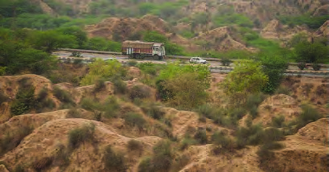<figcaption>Figure fig_ch04_p066_05 (Page 66)</figcaption></figure>
  <figure class="diagram-card" id="fig_ch04_p066_07"><figcaption>Figure fig_ch04_p066_07 (Page 66)</figcaption></figure>
  <figure class="diagram-card" id="fig_ch04_p066_08"><figcaption>Figure fig_ch04_p066_08 (Page 66)</figcaption></figure>
  <figure class="diagram-card" id="fig_ch04_p066_09"><figcaption>Figure fig_ch04_p066_09 (Page 66)</figcaption></figure>
  <figure class="diagram-card" id="fig_ch04_p066_10"><figcaption>Figure fig_ch04_p066_10 (Page 66)</figcaption></figure>
  <div class="page-content">
    <p>66<br>‹šuc-<br>z¢–x†c jÅ¢zšÆƀš„†c “›¢†š„–ĕšŽc ‚}ā› ¢Œts‘›Æ iˆ„Ǵœˆœ<br>†„›s¡‘ †ǰ n¡ Ƃ¢šz†¡ƀ}ĹųĬ§ gŦDZÄ iˆ„Ǵœˆ›¡ x› Ƃ…š†<br>“›“›¢…š¢Ŕ”DZ†„œ‚}ˆŗ‚›s¡‘ˆŽ›x¡ƀ}ǰˆĞ›s3.3)<br>†„œ‚}ˆŗ‚›<br>†„›<br>–cǚš†c<br>—›Žšs§<br>Œ—š†„›<br>p›•<br>‚cu‹ŝ<br>‚cu‹ŝš†„›<br>(ÕǑš†„›¡}¢ˆš•s†„›)<br>sÅĴš}sc<br>–Å„šÅ–¢Žš“Å<br>†Åƣ„<br>uzšĹ§<br>ÕǑŽšz–šuÅ<br>sš¢“Ž›<br>sÅĴš}sc<br>†›–šc–šuÅ<br>¢uš„š“Ž›<br>fŲšƂ¢„”§<br>xƠƏ£“†sÇ<br>ŒšÇ“šˆœ~‹žŒ›¡} “}¢Ú xŽ›“s<br>‘›Æ xƠƆ„›c ¢ˆš•s†„›s‘c<br>¢xÅų§ ‚}Å㍚eˆŽ„†Ĺ›ž¡}<br>ǔǏ›Úų xšsÇg“›}¡Ĺ “DZ‚DZ<br>–§‚‹ž–“›¢”•‚š§͏£“Ä–§Î<br>(Ravines) mųš§ gŎc<br>†›•§‰<br>‹žƂՂ› (Badland Topography) e›<br>¡ƀ}ų‚§<br>x›Ņc 3.9<br>£“†sÇ<br>ucu›¢¡Úŝųiˆ„ǵœˆœ†„›sÇ<br>ŒšÇ“šˆœ~‹žŒ››¡iÅųƂ¢„”ā‘›Æi„§‹“›ă§ “}¢Úš¡Ğš’s›<br>Œ†š†„››¢Úc ¢†Ž›Ğ§ucuš†„››¢Úc ¡xų¢xŽųƂ…š†<br>†„›sÇn¡‚Ƽš¡Œų§†›āÇŒÄe…DZšĹ›Æˆ~›ă¢Ƽš<br>z<br>xƠÆ<br>z<br>h †„›s¡‘ ucuš†„›¡} iˆ„Ǵœˆœ ¢ˆš•s†„›sÇ mųš§<br>“›‘›Úų‚§<br>ˆĞ›s3.3<br>iˆ„Ǵœˆœ†„›sÇ ¡ˆš‚¡“ zu‚šu‚¢šuDZŒƼ mŦš›Ž›Úšc<br>sšŽc?</p>
  </div>
</section>
<section class="page-section" id="page-67">
  <div class="page-header"><span class="page-number">Page 67</span></div>
  <figure class="diagram-card" id="fig_ch04_p067_01"><figcaption>Figure fig_ch04_p067_01 (Page 67)</figcaption></figure>
  <figure class="diagram-card" id="fig_ch04_p067_02"><figcaption>Figure fig_ch04_p067_02 (Page 67)</figcaption></figure>
  <figure class="diagram-card" id="fig_ch04_p067_04"><figcaption>Figure fig_ch04_p067_04 (Page 67)</figcaption></figure>
  <figure class="diagram-card" id="fig_ch04_p067_05"><figcaption>Figure fig_ch04_p067_05 (Page 67)</figcaption></figure>
  <figure class="diagram-card" id="fig_ch04_p067_06"><figcaption>Figure fig_ch04_p067_06 (Page 67)</figcaption></figure>
  <figure class="diagram-card" id="fig_ch04_p067_07"><figcaption>Figure fig_ch04_p067_07 (Page 67)</figcaption></figure>
  <div class="page-content">
    <p>67<br>‹­ŒxŽ›ŅŒāųˆœ~‹žŒ›<br>x›Ņc 3.10<br>–Å„šÅ–¢Žš“Åšc<br>mŦš§“›“›¢…š¢Ŕ”Dz†„œ‚}ˆŗ‚›?<br>pŽ †„›Ú§ s¡s e¡ÚЧ †›Åƣ›ă§<br>“›“›…f“”DZāÇ–š…DZŒšÚųˆŗ‚›<br>s‘š§ “›“›¢…š¢Ŕ”DZ †„œ‚}ˆŗ‚›sÇ<br>¡“ǫ¡ƀšÚ†›ũcz¢–x†cz<br>£“„DZ¢‚šÆƀš„†c idžš}Ä zu‚š<br>u‚cŒŇDZŠŰ†c“›¢†š„–ĕšŽc‚}ā›<br>“š§ gŎc ˆŗ‚›s‘¡} x›<br>Ƃ…š†i¢Ŕ”DZāÇ<br>ˆœ~‹žŒ››¡£†–Åu›s––Dzzšc<br>q¢ŽšƂ¢„”Ĺ›¡źcsšš“ǙƩc‹žƂՂ›Úce†ǔ‚Œš<br>š§ £†–Åu›s––DZzšāÇ Žžˆc ¡sšǫų‚§ iˆ„Ǵœˆœ<br>ˆœ~‹žŒ›Ƃ¢„”¡Ĺ £†–Åu›s––DZzšāÇn¡‚Ƽš¡Œų§ ¢†šÚšc<br>‹<br>iǒ¢Œtg¡ˆš’›csš}sÇ<br>iˆ„Ǵœˆœˆœ~‹žŒ››¡ nǮ“c “DZšˆsŒš –Ǵš‹š“›s “†ā<br>‘š›“ 70 ¡–ź›ŒœǮÅ Œ‚Æ 200 ¡–ź›ŒœǮÅ “¡Ž “šÅ•›s Œ’<br>‹›Úų Ƃ¢„”ā‘›š§<br>¡ˆš‚¡“ gŎc ––DZzšāÇ<br>sš¡ƀ}ų‚§ Œ’¡} nǮڝă›sÇ ŒÄ†›Åś g‚›¡†<br>ŽĬš›‚›Ž›Úšc<br> <br> zfÅŝg¡ˆš’›csš}sÇ(Moist deciduous forests)<br> <br> z“ŽĬg¡ˆš’›csš}sÇ(Dry deciduous forests)<br>100 ¡–ź›ŒœǮÅŒ‚Æ 200 ¡–ź›ŒœǮÅ“¡Ž“šÅ•›sŒ’‹›Úų<br>Ƃ¢„”ā‘›š§ fÅŝ g¡ˆš’›csš}sÇ sš¡ƀ}ų‚§<br>ˆDŽ›ŒvĞś¡ź s›’ÚÄ xŽ›“s‘›Æ ¡ˆš‚¡“ sĬ“Žų‚§<br>gŎc ––DZzšā‘š§ sž}š¡‚ Œ…DZƂ¢„”§ yŜ–§u€§<br>–cǙš†ā‘›¡<br>sųs‘›c<br>¢yšĞš†šu§ˆžŽ›c<br>gŎc<br>––DZzšā‘Ĭ§ ¢‚Ú§ –šÆ •›•c Œ­“ xŭ†c ‚}ā›<br>ƽäāÇh“†ā‘›Æ¡ˆš‚“š›sš¡ƀ}ų<br>œ<br>› ›<br>Å ›<br>“›“›¢…š¢Ŕ”DZ†„œ‚}ˆŗ‚›s¡‘ –cŠŰ›ă§ sž}‚Æ“›“ŽāÇ<br>¢”tŽ›Úž<br>iˆ„ǴœˆœgŦDZ›ǫ†„œ‚}ˆŗ‚›sÇn¡‚Ƽš¡Œų§e¢†Ǵ<br>•›ă›ž</p>
  </div>
</section>
<section class="page-section" id="page-68">
  <div class="page-header"><span class="page-number">Page 68</span></div>
  <figure class="diagram-card" id="fig_ch04_p068_01"><figcaption>Figure fig_ch04_p068_01 (Page 68)</figcaption></figure>
  <figure class="diagram-card" id="fig_ch04_p068_02"><figcaption>Figure fig_ch04_p068_02 (Page 68)</figcaption></figure>
  <figure class="diagram-card" id="fig_ch04_p068_03"><figcaption>Figure fig_ch04_p068_03 (Page 68)</figcaption></figure>
  <figure class="diagram-card" id="fig_ch04_p068_04"><figcaption>Figure fig_ch04_p068_04 (Page 68)</figcaption></figure>
  <div class="page-content">
    <p>68<br>‹šuc-<br>‚†‚›}ŒĴ›†ā‘c“—›ă¡sšĬ“ųŒĴ›†ā‘c<br>(In-situ Soils and Transported Soils)<br>q¢Žš Ƃ¢„”ŝŒǫ ”›s‘›Æ†›ųc Žžˆ¡ƀЧ e‚‚›}ā‘›ÆĹ¡ų †›<br>†›Æڝų ŒĴ›†ā‘š§ ‚†‚›}ŒĴ›†āÇi„šsĹŒĴ§<br>mųšÆ†„›s‘š¢šsšǮ›ž¡}¢š†œÚc¡xƭ¡ƀЧŒǮƂ¢„”ā‘›Æ†›¢äˆ›ă<br>sšų ŒĴ›†ā¡‘ “—›ă¡sšĬ“ų ŒĴ›†āÇ (Transported Soils) mų<br>“›‘›Úųi„šmÚƌĴ§<br>70 ¡–ź›ŒœǮÅ Œ‚Æ 100 ¡–ź›ŒœǮÅ “¡Ž “šÅ•›sŒ’ ‹›Úų<br>ˆœ~‹žŒ›¡} g‚Ž‹šuā‘›Æ “ŽĬ g¡ˆš’›c sš}s‘š<br>ǫ‚§ Œ’ ‚œ¡ŽÚĚ ¢Œts¢‘š}}Ú¢ƠšÇ g‚§ ŒÇښ}<br>sÇڝcsǮ›¡ă}›sÇڝc“’›Œšų“ŽÇăښ¡ŒĹų¢‚š¡}<br>h ––DZāÇ ˆžÅĴŒšc g¡ˆš’›Úsc “†āÇ gs‘›<br>ƼšĹ ––DZāÇ †›Ě ˆÆ¢Œ}s‘š› Œšsc ¡xƭų<br>¢‚Ú§¢š–§“§fs§–›Æ“§Œ‘“ÅuāÇ‚}ā›“g“›¡}<br>–š…šŽŒš§<br>iǒ¢ŒtšŒÇښ}sÇ <br>75 ¡–ź›ŒœǮ›Æ ‚š¡’<br>“šÅ•›s<br>Œ’ ‹›Úų‚c iÅų ‚šˆ†›ǫ‚Œš Ƃ¢„”ā‘›š§<br>gŎc ––DZzšāÇ ¡ˆš‚“š› sš¡ƀ}ų‚§ eā›āš›<br>iŽcsĚ ŒŽāÇ sš¡ƀ}ų e¢Ú•DZ ž¢‰šÅŠ›<br>hŦƀ† x› g†c ˆÆ“ÅuāÇ ‚}ā›“š§ Ƃ…š†<br>––DZāÇ ˆDŽ›ŒvĞś¡ź s›’Úš› Œ—šŽšȸ sÅĴš}sc<br>mųœ –cǙš†ā‘¡} eŅŒŽƂ¢„”ā‘›c fŲšƂ¢„”§<br>¡‚ÿš† ‚Œ›’§†š}§ –cǙš†ā‘›¡<br>“ŽĬ Ƃ¢„”ā‘›c<br>gŎc––DZzšā‘šǫ‚§<br>„䛁ˆÅ“‚“†āÇ  ˆœ~‹žŒ››¡ iÅų Ƃ¢„”ā‘š<br>ˆDŽ›ŒvĞc “›ŰDZš†›ŽsÇ †œu›Ž›ÚųsÇ mų›“›}ā‘›Æ<br>sš¡ƀ}ų ––DZzšā¡‘ ¡ˆš‚“›Æ „䛁ˆÅ“‚“†āÇ<br>mų “›‹šuśÆiÇ¡ƀ}Ĺšcg“›}ā‘›Æ1500 ŒœǮ›Æsž}‚Æ<br>iŽŒǫ g}ā‘›Æ Œ›¢‚šǑ––DZzšā‘c ‚š¢’ڝ“Ž¢ƠšÇ<br>i¢ˆšǑ––DZzšā‘c sš¡ƀ}ų †œu›Ž› ˆ‘†› f†Œ<br>†›Žs‘›¡ i¢ˆšǑ––DZzšā¡‘<br>¢xš“†āÇ (Shola Forests) <br>mų“›‘›Úų<br>iˆ„ǵœˆœˆœ~‹žŒ››¡ŒĴ›†āÇ<br>iˆ„Ǵœˆœˆœ~‹žŒ››Æ sš¡ƀ}ų ŒĴ›†ā‘›¢¡c ‚†‚›<br>}ŧ Žžˆ¡ƀĞ“š§ (In-situ soils).g“›¡}sš¡ƀ}ų ŒĴ›†ā¡‘<br>sĹŒĴ§ ¡xƣĴ§ šǮ£Ǯ§ŒĴ§ ˆÅ“‚ŒĴ§ mų›ā¡†<br>‚›Ž›Úšc</p>
  </div>
</section>
<section class="page-section" id="page-69">
  <div class="page-header"><span class="page-number">Page 69</span></div>
  <figure class="diagram-card" id="fig_ch04_p069_01"><figcaption>Figure fig_ch04_p069_01 (Page 69)</figcaption></figure>
  <figure class="diagram-card" id="fig_ch04_p069_02"><figcaption>Figure fig_ch04_p069_02 (Page 69)</figcaption></figure>
  <figure class="diagram-card" id="fig_ch04_p069_03"><figcaption>Figure fig_ch04_p069_03 (Page 69)</figcaption></figure>
  <figure class="diagram-card" id="fig_ch04_p069_04">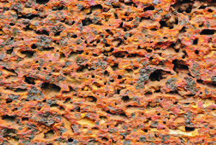<figcaption>Figure fig_ch04_p069_04 (Page 69)</figcaption></figure>
  <div class="page-content">
    <p>69<br>‹­ŒxŽ›ŅŒāųˆœ~‹žŒ›<br>x›Ņc3.11<br>sĹŒĴ§<br>x›Ņc3.12<br>¡xƣĴ§<br>x›Ņc 3.13 <br>šǯ£ǯ§ŒĴ§<br>sĹŒĴ§(Black Soil)<br>ښĈœ~‹žŒ›¡} “}ڝˆ}›Ěš‹šuc<br>e‚›“›”šŒš<br>š“šˆœ~‹žŒ›š¡ų§<br>†›āÇŒ†Ǡ›šÚ›¢ƼšhƂ¢„”¡Ĺ<br>Š–šÇЧ š“š”›sÇÚ§ „œÅvsš¡Ĺ<br>eˆäc–c‹“›ă§Žžˆc¡sšǫų‚š§<br>sĹŒĴ§<br>Œ—šŽšȸŒ…DZƂ¢„”§mųœ–cǙš†ā‘›Æ<br>Ƃ…š†ŒšcsÅĴš}sc¡‚ÿš†fŲš<br>Ƃ¢„”§ uzšĹ§ ‚Œ›’§†š}§ mųœ –cǙš†ā‘›Æ ‹šu›sŒšc<br>sĹŒĴ§sš¡ƀ}ųhŒĴ§Œ¢Ǯ¡‚Ƽšc¢ˆŽs‘›Æe›<br>¡ƀ}ų?<br>¡xƣĴ§ (Red Soil)<br>iˆ„Ǵœˆœˆœ~‹žŒ››¡ Ƃšxœ† ˆŽÆŽžˆ<br>sššŦŽ›‚”›sÇÚ§eˆäc–c‹“›<br>㚁§ ¡xƣĴ§ iĬšsų‚§ ¡ˆš‚¡“<br>¡xƣĴ§ mų§ “›‘›Ú¡Œÿ›c x››}<br>ā‘›Æ g‚§ ‚“›Ğ§ xšŽc ŒĚ ‚}ā›<br>†›ā‘›š§ sš¡ƀ}ų‚§ h ŒĴ›Æ<br>“›¢‚š‚›Æ e}ā››Ğǫ gŽƠ›¡ź<br>–šų›…DZŒš§<br>x“ƀ†›Ĺ›†§<br>Ƃ…š†<br>sšŽc<br>šǯ£ǯ§ŒĴ§ (Laterite Soil)<br>s†Ĺ Œ’c “ŽÇ㍝c Œš›Œš› e†<br>‹“¡ƀ}ųƂ¢„”ā‘›ÆŒĴ›¡–››Ú<br>xĴšƠ§ ‚}ā› “āÇ jÅų›<br>āÆƂ⛍›ž¡}<br>†œÚc<br>¡xƭ¡ƀ}<br>ų‚›¡ź ‰Œš› Žžˆ¡ƀ}ų‚š§ šǮ<br>£Ǯ§ŒĴ§ ˆœ~‹žŒ››Æ ˆDŽ›ŒvĞc ˆžÅ“<br>vĞcŽšz§Œ—ÆڝųsÇ“›ŰDZ–‚§ˆŽ<br>ˆÅ“‚āÇŒšÇ“šˆœ~‹žŒ›‚}ā›Ƃ¢„<br>”ā‘›š§<br>ŒtDZŒšc<br>šǮ£Ǯ§ŒĴ§<br>sš¡ƀ}ų‚§<br>¡ˆš‚¡“<br>‰ˆǏ›<br>sĚhŒĴ›†cՕ›¢šuDZŒ¡Ƽÿ›c<br>“‘Ƃ¢šuśž¡}¢‚›sšƀ›ƔÅe}Ʃ‚}ā›¢‚šĞ“›‘<br>sÇښ›“Ä¢‚š‚›ÆƂ¢šz†¡ƀ}Ĺų</p>
  </div>
</section>
<section class="page-section" id="page-70">
  <div class="page-header"><span class="page-number">Page 70</span></div>
  <figure class="diagram-card" id="fig_ch04_p070_01">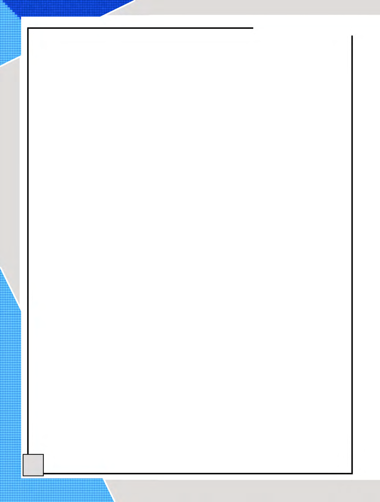<figcaption>Figure fig_ch04_p070_01 (Page 70)</figcaption></figure>
  <figure class="diagram-card" id="fig_ch04_p070_02">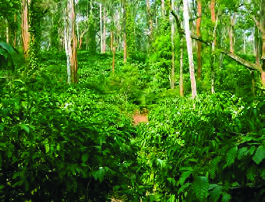<figcaption>Figure fig_ch04_p070_02 (Page 70)</figcaption></figure>
  <div class="page-content">
    <p>70<br>‹šuc-<br>x›Ņc 3.14<br>sšƀ›¢ĹšĞc<br>ˆÅ“‚ŒĴ§ (Mountain Soil)<br>„䛢ŦDZ›Æ ˆÅ“‚ŒĴ§ sš¡ƀ}ų‚§ ˆDŽ›ŒvЈžÅ“<br>vĞŒ†›Žs‘›š§sÅĴš}sc‚Œ›’§†š}§¢sŽ‘cmųœ–cǙš†<br>ā‘›Æ¢‚šĞ“›‘sÇÚ§Ƃ¢‚DZs›ă§¢‚›sšƀ›–uŰŝ“DZāÇ<br>iǑ¢Œtšˆ’“ÅuāÇ<br>mų›“¡}<br>Օ›Ú§<br>ˆÅ“‚ŒĴ§<br>e†¢šzDZŒš§<br>¢ŒÆƀĚ ŒĴ›†ā¡‘ sž}š¡‚ iˆ„Ǵœˆœˆœ~‹žŒ››Æ sšš<br>“ǙƩc ‹žƂՂ›Úc e†ǔ‚Œš› £““›…DZŒšÅų Ƃš¢„”›s<br>ŒĴ›†āÇsž}›sš¡ƀ}ų<br>iˆ„ǵœˆœˆœ~‹žŒ››¡Օ›<br>–Œ‚Ƃ¢„”ā¡‘ e¢ˆä›ă§ ˆœ~‹žŒ› Ƃ¢„”āÇ ¡ˆš‚¡“<br>Օ›¢šuDZŒ¡Ƽÿ›c ¡†Ƽ§ ¢uš‚Ơ§ ˆŽĹ› sŽ›Ơ§ ˆs›<br>‚}ā› “›‘s‘c ¢‚šĞ“›‘s‘š sšƀ› ¢‚› ‚}ā›“c<br>iˆ„Ǵœˆœˆœ~‹žŒ›¡} “›“›…‹šuā‘›Æ Օ›¡xƭų †›Œ§¢†š<br>ų‚Œš ‹žƂՂ› †œ¡Žš’ÚšÆ sšÅ¡ų}Ú¡ƀĞ ¢ŒÆŒĴ§<br>¡xÿĹšxŽ›“sÇ¢ŒÆŒĴ›¡źs†Ú“§e†šƽ‚”›sÇ<br>g}Ʃ›¡}ǫ sųsÇ ‚}ā› sšŽā‘šÆ x››}ā‘›Æ<br>ŒšŅ¢ŒՕ›–š…DZŒšsųǫž<br>ˆDŽ›ŒvІ›Žs‘›Æ¢‚šĞ“›‘sÇښ§ƂšŒtDZc†œu›Ž›¢Œt<br>›Æ ¢‚› sšƀ› ‚}ā›“¡} ¢‚šĞāÇ “DZšˆsŒš§<br>mųšÆŒĕŽ›“sÇ‚Нs‘šÚ›¡†Æ<br>ە›}Úcg“›¡}–š…DZŒšÚųĬ§<br>sšƀ›sÅĴš}sŒš§gŦDZ›¡sšƀ›<br>iƈš„†Ĺ›Æ<br>pųšcǙš†Ĺǫ<br>–cǙš†c sšƀ›Û•›¡} ns¢„”c<br>59 ”‚Œš†“c sšƀ› iƈš„†Ĺ›¡ź<br>ns¢„”c71 ”‚Œš†“csÅĴš}sśÆ<br>†›ųš§ iƈš„†Ĺ›Æ ns¢„”c 22 <br>”‚Œš†“Œš› ¢sŽ‘Œš§ ŽĬšcǙš<br>†Ĺ§eŠ›Ú¢šŠǡmųœg†ā<br>‘›ǫ ŒŦ› ‚Žc sšƀ››†ā‘š§<br>ŒtDZŒšcՕ›¡xƭų‚§</p>
  </div>
</section>
<section class="page-section" id="page-71">
  <div class="page-header"><span class="page-number">Page 71</span></div>
  <figure class="diagram-card" id="fig_ch04_p071_01"><figcaption>Figure fig_ch04_p071_01 (Page 71)</figcaption></figure>
  <figure class="diagram-card" id="fig_ch04_p071_02"><figcaption>Figure fig_ch04_p071_02 (Page 71)</figcaption></figure>
  <figure class="diagram-card" id="fig_ch04_p071_03"><figcaption>Figure fig_ch04_p071_03 (Page 71)</figcaption></figure>
  <figure class="diagram-card" id="fig_ch04_p071_04"><figcaption>Figure fig_ch04_p071_04 (Page 71)</figcaption></figure>
  <figure class="diagram-card" id="fig_ch04_p071_05"><figcaption>Figure fig_ch04_p071_05 (Page 71)</figcaption></figure>
  <figure class="diagram-card" id="fig_ch04_p071_06"><figcaption>Figure fig_ch04_p071_06 (Page 71)</figcaption></figure>
  <figure class="diagram-card" id="fig_ch04_p071_08"><figcaption>Figure fig_ch04_p071_08 (Page 71)</figcaption></figure>
  <figure class="diagram-card" id="fig_ch04_p071_09"><figcaption>Figure fig_ch04_p071_09 (Page 71)</figcaption></figure>
  <figure class="diagram-card" id="fig_ch04_p071_10"><figcaption>Figure fig_ch04_p071_10 (Page 71)</figcaption></figure>
  <figure class="diagram-card" id="fig_ch04_p071_11"><figcaption>Figure fig_ch04_p071_11 (Page 71)</figcaption></figure>
  <figure class="diagram-card" id="fig_ch04_p071_12"><figcaption>Figure fig_ch04_p071_12 (Page 71)</figcaption></figure>
  <div class="page-content">
    <p>71<br>‹­ŒxŽ›ŅŒāųˆœ~‹žŒ›<br>x›Ņc 3.15 <br>¢‚›¢ĹšĞc<br>x›Ņc 3.16 <br>sŽ›Ơ§Օ›<br>xŽ›Ņcs›ăn’§sšƀ›ÚŽÚÇ<br>šc†žǮšĬ›¡źe“–š†¢Ĺš¡}š§gŦDZ›Æ<br>sšƀ›Û•›fŽc‹›ă‚§Œǟœcˆ¢Žš—›‚†š›Žų<br>ŠšŠšŠ„š†š§e¢ŠDZ›Æ†›ų§n’§sšƀ›ÚŽ<br>ÚÇgŦDZ›¡Ĺ›ă§sÅĴš}sś¡x›ÚŒu<br>Ž“›¡ Œ¢šŽĹ§sšƀ›Û•›Ú§ ‚}Úcs›ă‚§<br>gŦDZÄsšƀ›¡}zŶ¢„”ŒšhƂ¢„”cŠšŠš<br>Š„šÄsųsÇ mų›¡ƀ}ų Ɩ›Ğœ•§ ‹Ž<br>sšĹc ‚}Åųc sšƀ›¢ĹšĞā‘c sšƀ› “DZ“<br>–š“csž}‚Æ“›s–›ă<br>x<br>¢‚›ˆœ~‹žŒ››Æ¢‚›Û•›Ƃ…š<br>†Œšc ‚Œ›’§†š}§sÅĴš}sc¢sŽ‘cmųœ<br>–cǙš†ā‘›š›<br>“DZšˆ›ăs›}ڝų<br>†œu›Ž›Úųs‘›c ˆDŽ›ŒvІ›Ž›<br>Œš§gŦDZ›¡f¡siƈš„†Ĺ›¡ź<br>25 ”‚Œš†“c<br>¢‚šĞ“›ɀ‚›¡}<br>44<br>”‚Œš†“c h ¢Œt›š§ …šŽš‘c<br>¡‚š’›š‘›sÇf“”DZŒš‚›†šÆ¢‚›<br>¢ĹšĞā‘›c e†ŠŰ“DZ“–šĹ›<br>Œš› e†“…› ¡‚š’›“–ŽāÇ ‹DZŒš<br>sų<br>sŽ›Ơ§  iĹ¢ŽŦDZÄ –Œ‚ā‘›š§<br>sž}‚ÆsŽ›ƠÕ•›iǫ¡‚ÿ›csŽ›Ơ<br>Օ›Ú§ nǮ“c e†sžŒš sšš“Ǚ<br>¡šŽÚų‚§ښĈœ~‹žŒ›Ƃ¢„”Œš§<br>g“›}¡Ĺ<br>e†sžv}sāÇ<br>m¡Ŧ<br>Ƽš¡Œų§ ¢†šÚž<br>z ښĈœ~‹žŒ››¡sĹš“šŒĴ§<br>z iǑ¢Œtšsšš“Ǚc<br>„œÅvŒš<br>“›‘¡“}ƀsš“c<br>z iǑ¢Œt›Æ<br>“›‘ų<br>sŽ›Ơ›¡<br>‚šŽ‚¢ŒDZ†<br>iÅų<br>e‘“›ǫ–ž¢âš–§ec”c<br>sŽ›ƠÆƀš„†Ĺ›ÆpųšcǙš†Ĺǫ–cǙš†¢Œ‚§?</p>
  </div>
</section>
<section class="page-section" id="page-72">
  <div class="page-header"><span class="page-number">Page 72</span></div>
  <figure class="diagram-card" id="fig_ch04_p072_01"><figcaption>Figure fig_ch04_p072_01 (Page 72)</figcaption></figure>
  <figure class="diagram-card" id="fig_ch04_p072_02"><figcaption>Figure fig_ch04_p072_02 (Page 72)</figcaption></figure>
  <figure class="diagram-card" id="fig_ch04_p072_03">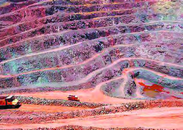<figcaption>Figure fig_ch04_p072_03 (Page 72)</figcaption></figure>
  <figure class="diagram-card" id="fig_ch04_p072_04"><figcaption>Figure fig_ch04_p072_04 (Page 72)</figcaption></figure>
  <div class="page-content">
    <p>72<br>‹šuc-<br>x›Ņc3.17<br>ˆŽĹ›Û•›<br>x›Ņc 3.18<br>gŽƠ›Ž§t†›<br>x›Ņc 3.19<br>sÆڎ›ƀš}c<br>ˆŽĹ›  ˆŽĹ› pŽ tšŽ›‰§ “›‘š<br>¡ÿ›ciˆ„ǴœˆœgŦDZ›Æp¢ÜšŠÅ<br>Œš–¢Ĺš¡} Օ› fŽc‹›ă§ z†“Ž›<br>Œ‚Æ ¡Œ§ “¡Ž Œš–ā‘›š› “›‘¡“<br>}ƀ§†}ŝųsšŽc“‘Å㍝¡}n’§<br>Œš–¢Ĺš‘c ŒĚ§ iĬšsšÄ ˆš}›Ƽ<br>21 ›÷›Œ‚Æ30›÷› ¡–Æ•DZ–§“¡Ž<br>‚šˆ†›c 50 ¡–ź›ŒœǮÅ Œ‚Æ 100 <br>¡–ź›ŒœǮÅ  “¡Ž “šÅ•›s “Å•ˆš‚“<br>Œš§ ˆŽĹ›Û•›Ú§ f“”DZc mųšÆ<br>Œ’ sĚ Ƃ¢„”ā‘›c z¢–x†<br>–—š¢Ĺš¡} ˆŽĹ› Օ›¡xƭų ښÄ  ŒšÇ“šˆœ~‹žŒ›<br>Ƃ¢„”ā‘›¡ sĹŒĴš§ ˆŽĹ›Û•›Ú§ nǮ“c e†<br>¢šzDZc ŽšzDZŧ f¡s iƈš„†Ĺ›Æ pųšcǙš†c uzš<br>ś†š§Œ—šŽšȸš§ŽĬšcǙš†Ĺ§<br>…š‚Ú‘¡}s“<br>iˆ„Ǵœˆœˆœ~‹žŒ››¡ ˆŽÆŽžˆ ”›šˆš‘›s‘›c iŽcsĚ<br>sųs‘›Œš§ …š‚“›‹“āÇ n¡c ¢sůœsŽ›ă›Ž›Úų‚§<br>¢yšĞš†šu§ˆžÅ ˆœ~‹žŒ›¡ …š‚Ú‘¡} Ǣ„‹žŒ› mų§ “›¢”<br>•›ƀ›Úų {šÅtį§ ˆDŽ›ŒŠcušÇ p›• –cǙš†<br>ā‘›š›“DZšˆ›ăs›}ڝų¢yšĞš†šu§ˆžÅp›•ˆœ~‹žŒ›š§<br>gŦDZ›¡nǮ“c–ƠųŒš…š‚¢ŒtsÆڎ›gŽƠ›Ž§<br>Œšcu†œ–§ £ŒÚ ¢Ššs§£–Ǯ§ ¡xƠ§ ‚}ā› …šŽš‘c ¢š—<br>e¢š— …š‚Ú‘šÆ –ƜŗŒš›“›}c …š‚“›‹“ā‘¡} ‹DZ‚<br>Ʃ†–Ž›ă§<br>iˆ„Ǵœˆœˆœ~‹žŒ›¡<br>“›“›…<br>…š‚¢Œts‘š›<br>‚›Ž›Úǰ</p>
  </div>
</section>
<section class="page-section" id="page-73">
  <div class="page-header"><span class="page-number">Page 73</span></div>
  <figure class="diagram-card" id="fig_ch04_p073_01"><figcaption>Figure fig_ch04_p073_01 (Page 73)</figcaption></figure>
  <figure class="diagram-card" id="fig_ch04_p073_03"><figcaption>Figure fig_ch04_p073_03 (Page 73)</figcaption></figure>
  <figure class="diagram-card" id="fig_ch04_p073_04"><figcaption>Figure fig_ch04_p073_04 (Page 73)</figcaption></figure>
  <div class="page-content">
    <p>73<br>‹­ŒxŽ›ŅŒāųˆœ~‹žŒ›<br>1. “}ڝs›’ÚĈœ~‹žŒ›Ƃ¢„”c<br>nǮ“c“› …š‚¢Œtš§ ¢yšĞš†šu§ˆžÅp›•ˆœ~‹žŒ›sÇ<br>{šÅtį§ˆDŽ›ŒŠcušÇp›•mųœ–cǙš†ā‘›š›h<br>¢Œt “DZšˆ›ăs›}ڝų sÆڎ› gŽƠ›Ž§ Œǰu†œ–§ eƛc<br>¢Ššs§£–Ǯ§ ¡xƠ§ ‚}ā› …š‚ÚÇ h ¢Œt›Æ t††c<br>¡xƭ¡ƀ}ų<br>2Œ…Dz¢Œt<br>yŜ–§u€§Œ…DZƂ¢„”§¡‚ÿš†fŲšƂ¢„”§Œ—šŽšȸmųœ<br>–cǙš†ā‘›š› “DZšˆ›ăs›}ڝų Œ…DZ¢Œt›Æ Œšcu†œ–§<br>¢Ššs§£–Ǯ§xĴšƠsƼ§ŒšÅŠ›ÇsÆڎ›eƛcgŽƠ›Ž§<br>÷š£‰Ǯ§ ‚}ā›…š‚ÚÇ–‹Œš§<br>3.„䛁¢Œt<br>sÅĴš}sˆœ~‹žŒ›ce‚›¢†š}§ ¢xÅų§Ǚ›‚›¡xƭų ‚Œ›’§†š<br>}›¡ź‹šuā‘ciÇ¡ƀĞh¢Œt›ÆgŽƠ›Ž§¢Ššs§£–Ǯ§<br>›£õǮ§ ‚}ā›…š‚ÚÇsš¡ƀ}ų<br>4. ¡‚ڝˆ}›ĚšÄ¢Œt<br>ˆ}›ĚšÄ sÅĴš}s“c ¢uš“c ¢xÅų  h ¢Œt›Æ<br>gŽƠ›Ž§s‘›ŒĴ§ ‚}ā›“…šŽš‘Œš›sš¡ƀ}ų<br>5. “}ڝˆ}›ĚšÄ¢Œt<br>ŽšzǙš†›¡eŽš“›†›Žce‚›¢†š}§ ¢xÅų§Ǚ›‚›¡xƭų<br>uzšĹ›¡ź ‹šuā‘c ¡xƠ§ hc –›ÿ§ ¢†›c £ŒÚ<br>‚}ā›“šÆ–ƠųŒš§<br>gŦDZ›¡Ƃ…š†…š‚t††¢Œts‘¡}Ǚš†c ‹žˆ}c (x›Ņc<br>3.20)†›Žœä›ă§ Œ†Ǡ›šÚžq¢Žš–cǙš†Ĺ›cƂ…š†Œšc<br>sš¡ƀ}ų…š‚ÚLjЛs¡ƀ}Ĺž</p>
  </div>
</section>
<section class="page-section" id="page-74">
  <div class="page-header"><span class="page-number">Page 74</span></div>
  <figure class="diagram-card" id="fig_ch04_p074_01"><figcaption>Figure fig_ch04_p074_01 (Page 74)</figcaption></figure>
  <figure class="diagram-card" id="fig_ch04_p074_03"><figcaption>Figure fig_ch04_p074_03 (Page 74)</figcaption></figure>
  <figure class="diagram-card" id="fig_ch04_p074_04"><figcaption>Figure fig_ch04_p074_04 (Page 74)</figcaption></figure>
  <figure class="diagram-card" id="fig_ch04_p074_05">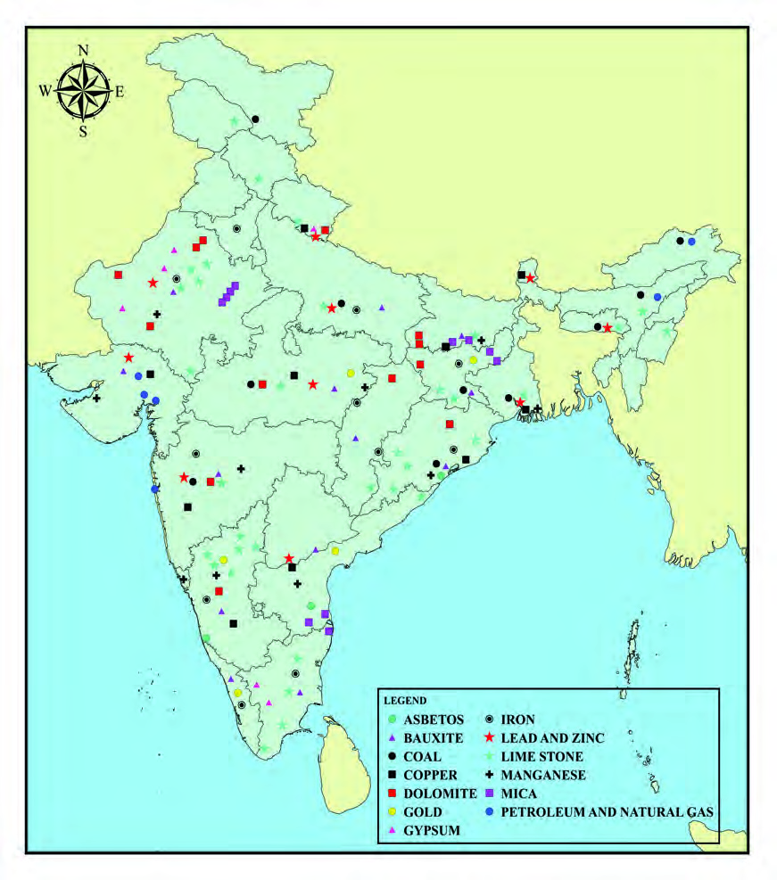<figcaption>Figure fig_ch04_p074_05 (Page 74)</figcaption></figure>
  <div class="page-content">
    <p>74<br>‹šuc-<br>Ƃ…š†…š‚Ú‘¡}“›‚Ž‹žˆ}c‚ƭššÚ›‹žˆ}¢”tŽĹ›Æ<br>(My Own Atlas)iÇ¡ƀ}Ĺž<br>–žx›s<br>Ƃ…š††uŽāÇ<br>iˆ„ǵœˆœˆœ~‹žŒ›<br>–cǚš†e‚›Åś<br>gŦDz<br>gŦDz<br>…š‚“›‹“āÇ<br>…š‚“›‹“āÇ<br>šÚ§<br>šÚ§<br>zƣ<br>sšNJœÅ<br>zƣ<br>sšNJœÅ<br>—›ŒšxÆƂ¢„”§<br>—›ŒšxÆƂ¢„”§<br>ˆĕšŠ§<br>ˆĕšŠ§<br>iŎštį§<br>iŎštį§<br>–›Ú›c<br>–›Ú›c<br>e–c<br>e–c<br>¢Œvš<br>¢Œvš<br>Œ›ƀžÅ<br>Œ›ƀžÅ<br>Œ›¢–šDZ<br>Œ›¢–šDZ<br>Ņ›ˆŽ<br>Ņ›ˆŽ<br>eŽšxÆƂ¢„”§<br>eŽšxÆƂ¢„”§<br>†šuššź§<br>†šuššź§<br>Šœ—šÅ<br>Šœ—šÅ<br>{šÅtį§<br>{šÅtį§<br>Œ…DzƂ¢„”§<br>Œ…DzƂ¢„”§<br>p›•<br>p›•<br>yŜ–§t€§<br>yŜ–§t€§<br>—Ž›š†<br>—Ž›š†<br>¡Ɨ›<br>¡Ɨ›<br>ŽšzǚšÄ<br>ŽšzǚšÄ<br>¢uš“<br>¢uš“<br>fŲšƂ¢„”§<br>fŲšƂ¢„”§<br>fÄŒÄ<br>†›¢ÚšŠšÅ<br>fÄŒÄ<br>†›¢ÚšŠšÅ<br>ˆ‚¢ăŽ›<br>ˆ‚¢ăŽ›<br>ä„ǵœˆ§<br>ä„ǵœˆ§<br>¢sŽ‘<br>¢sŽ‘<br>‚Œ›’§†š}§<br>‚Œ›’§†š}§<br>¡‚ÿš†<br>¡‚ÿš†<br>„šŝ<br>†šuŗ¢“›<br>„šŝ<br>†šuŗ¢“›<br>Œ—šŽšȹ<br>Œ—šŽšȹ<br>uzšĹ§<br>uzšĹ§<br>iĹÅƂ¢„”§<br>iĹÅƂ¢„”§<br>ŠcušÇiÇÚ}Æ<br>ŠcušÇiÇÚ}Æ<br>eŠ›Ú}Æ<br>eŠ›Ú}Æ<br>–žx›s<br>f–§Š¢Ǣš–§<br>¢Ššs§£–ǯ§<br>sÆڎ›<br>¡xƠ§<br>¢š¢‘š£Œǯ§<br>–ǵÅĴc<br>z›Ƅc<br>gŽƠ§<br>¡§–›ÿ§<br>xĴšƠ§sƽ§<br>ŒDZu†œ–§<br>£ŒÚ<br>¡ˆ¢ğš‘›“cƂՂ›“š‚s“c<br>MAP NOT TO SCALE</p>
  </div>
</section>
<section class="page-section" id="page-75">
  <div class="page-header"><span class="page-number">Page 75</span></div>
  <figure class="diagram-card" id="fig_ch04_p075_01"><figcaption>Figure fig_ch04_p075_01 (Page 75)</figcaption></figure>
  <figure class="diagram-card" id="fig_ch04_p075_02">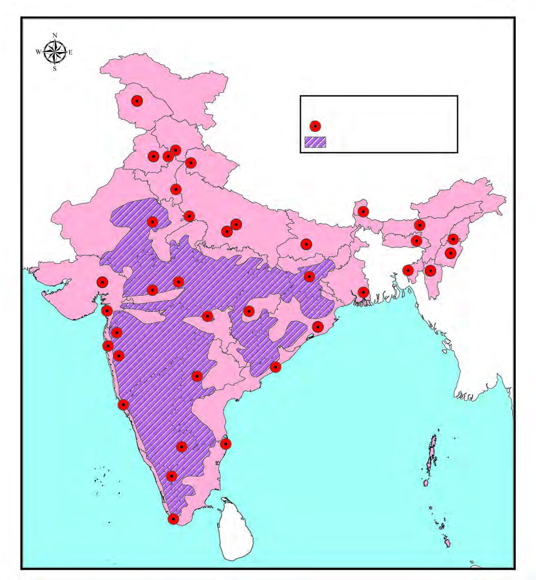<figcaption>Figure fig_ch04_p075_02 (Page 75)</figcaption></figure>
  <div class="page-content">
    <p>75<br>‹­ŒxŽ›ŅŒāųˆœ~‹žŒ›<br>eŠ›Ú}Æ<br>eŠ›Ú}Æ<br>ŠcušÇiÇÚ}Æ<br>ŠcušÇiÇÚ}Æ<br>…›š†<br>…›š†<br>•›c<br>•›c<br>¢„Žš„žÃ<br>¢„Žš„žÃ<br>xįœu€§<br>xįœu€§<br>†DzžƗ›<br>†DzžƗ›<br>z§ˆžÅ<br>z§ˆžÅ<br>f÷<br>f÷<br>sšÃˆžÅ<br>sšÃˆžÅ<br>s§†­<br>s§†­<br>ˆ}§†<br>ˆ}§†<br>šĕ›<br>šĕ›<br>u“š—Ĺ›<br>u“š—Ĺ›<br>Njœ†uÅ<br>Njœ†uÅ<br>¡sšÆÚĹ<br>¡sšÆÚĹ<br>euÅŐ<br>euÅŐ<br>o–§“šÇ<br>o–§“šÇ<br>gc‰šÆ<br>gc‰šÆ<br>¡sš—›Œ<br>¡sš—›Œ<br>•›¢ƽšw§<br>•›¢ƽšw§<br>ušw§¢}šs§<br>ušw§¢}šs§<br>“›”štˆĞc<br>“›”štˆĞc<br>£—„ŽšŠš„§<br>£—„ŽšŠš„§<br>ˆ†šz›<br>ˆ†šz›<br>Šcu§‘žŽ<br>Šcu§‘žŽ<br>¡x£ų<br>¡x£ų<br>¢sšƠŞÅ<br>¢sšƠŞÅ<br>‚›Ž“†ŦˆŽc<br>‚›Ž“†ŦˆŽc<br>ˆž¡†<br>ˆž¡†<br>Œc£Š<br>Œc£Š<br>†š•›s§<br>†š•›s§<br>–žǯ§<br>–žǯ§<br>e—ƣ„šŠš„§<br>e—ƣ„šŠš„§<br>¢‹šƀšÆ<br>¢‹šƀšÆ<br>gÄ¢šÅ<br>gÄ¢šÅ<br>†šu§ˆžÅ<br>†šu§ˆžÅ<br>š§ˆžÅ<br>š§ˆžÅ<br>‹“¢†”ǵÅ<br>‹“¢†”ǵÅ<br>gŦDz<br>gŦDz<br>Ƃ…š††uŽāÇ<br>Ƃ…š††uŽāÇ<br>–žx›s<br>Ƃ…š††uŽāÇ<br>iˆ„ǵœˆœˆœ~‹žŒ›<br>x›Ņc 3.21<br>iˆ„ǵœˆœˆœ~‹žŒ››¡z†zœ“›‚c<br>iˆ„Ǵœˆœˆœ~‹žŒ››ÆŒ›‚Œšz†–ctDZšǫ‚§¡ˆš‚¡“Օ›¢šuDZŒƼšĹ<br>‹žƂՂ›c“ÄsŽsšš“ǙcsšŽcf„DZsšā‘›Æiˆ„Ǵœˆœˆœ~‹žŒ››Æ<br>z†“š–cˆŽ›Œ›‚Œš›Žųˆ›ÆښĹ§…š‚t††Ƃ“ÅņāÇfŽc‹›ă‚c<br>¢š§¡›Æ u‚šu‚ŒšÅuāÇ “›s–›ă‚c …š‚ e…›ǐ›‚ “DZ“–šā‘¡}<br>f“›Å‹š““cz†ā¡‘ˆœ~‹žŒ››¢Ʃ}ƀ›ăsž}š¡‚z¢–x†“c–š¢ÿ‚›s<br>–š…DZ‚s‘c ŒÄ†›Åśǫ “š›zDZ Օ›–š…DZ‚s‘c g“›¡} z†“š–c<br>iŽų‚›†§sšŽŒš›<br>–cǙš†‚Ǚš†ā‘ct††“DZ“–š¢Œts‘c¢sůœsŽ›ă§“ĆuŽāÇ<br>‚¡ų“›s–›Úš†›}š›<br>MAP NOT TO SCALE</p>
  </div>
</section>
<section class="page-section" id="page-76">
  <div class="page-header"><span class="page-number">Page 76</span></div>
  <figure class="diagram-card" id="fig_ch04_p076_01"><figcaption>Figure fig_ch04_p076_01 (Page 76)</figcaption></figure>
  <figure class="diagram-card" id="fig_ch04_p076_02"><figcaption>Figure fig_ch04_p076_02 (Page 76)</figcaption></figure>
  <figure class="diagram-card" id="fig_ch04_p076_04"><figcaption>Figure fig_ch04_p076_04 (Page 76)</figcaption></figure>
  <figure class="diagram-card" id="fig_ch04_p076_05"><figcaption>Figure fig_ch04_p076_05 (Page 76)</figcaption></figure>
  <div class="page-content">
    <p>76<br>‹šuc-<br>1. iˆ„Ǵœˆœˆœ~‹žŒ››¡ Ƃ…š† Œ†›ŽsÇ sųsÇ ˆœ~<br>Ƃ¢„”āÇ mų›“ ‹žˆ}śÆ e}š‘¡ƀ}Ĺ› xšÅЧ ‚ƭš<br><br>šÚs<br>2. iˆ„Ǵœˆœˆœ~‹žŒ››¡ Ƃ…š† †„›s¡‘ sš›Úų ‹žˆ}c<br><br>‚ƭššÚ›㚖›ÆƂ„Å”›ƀ›Úž<br>3.iˆ„Ǵœˆœˆœ~‹žŒ››¡Ƃ…š†…š‚t††¢ŒtsÇe†¢š<br><br>zDZŒš e}š‘āÇ iˆ¢šu›ă§ ‹žˆ}śÆ ¢Žt¡ƀ}Ĺ›<br>–šŒž—DZ”šȻšŠ›ÆƂ„Å”›ƀ›Úž<br>4. iˆ„Ǵœˆœˆœ~‹žŒ››¡ Ƃ…š† “DZ“–šāÇ n¡‚Ƽš¡Œų§<br>e¢†Ǵ•›ă›Ě§ e“¡} “›†DZš–âŒĹ›Æ …š‚“›‹“ā‘<br><br>¡}cՕ›¡}cˆÿ§ “›”s†c ¡xƭs<br>‹­‚›s “›vš‚ā¡‘ Œš†““›‹“¢”•› “›s–†Ĺ›ž¡} ‚Žc<br>¡xƭsce–š…DZŒš›Žų‚§–š…DZŒšÚsc ¡xƭų Œ†•DZ<br>e…Ǵš†Ĺ›¡źiŌőǏšŦŒš§iˆ„Ǵœˆœˆœ~‹žŒ›<br>‚}ÅƂ“ÅņāÇ<br>‹žˆ}c (x›Ņc 3.21) †›Žœä›ă§ iˆ„Ǵœˆœˆœ~‹žŒ››Æ iÇ¡ƀĞ<br>Ƃ…š†¡Œ¢ğš†uŽāÇn¡‚Ƽš¡Œų§s¡ĬŞ<br>iˆ„Ǵœˆœˆœ~‹žŒ››¡ Ƃ…š† †uŽāÇ ‹žˆ}śÆ ¢Žt<br>¡ƀ}Ĺ› ‹žˆ}¢”tŽĹ›Æ (My Own Atlas) iÇ¡ƀ}Ĺž</p>
  </div>
</section>
<section class="page-section" id="page-77">
  <div class="page-header"><span class="page-number">Page 77</span></div>
  <figure class="diagram-card" id="fig_ch04_p077_01"><figcaption>Figure fig_ch04_p077_01 (Page 77)</figcaption></figure>
  <figure class="diagram-card" id="fig_ch04_p077_02">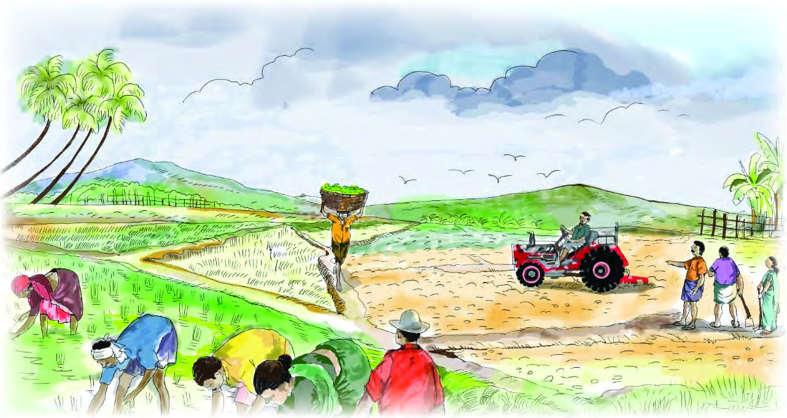<figcaption>Figure fig_ch04_p077_02 (Page 77)</figcaption></figure>
  <div class="page-content">
    <p>Œš†““›‹“¢”•›<br>Žšȹˆ¢Žšu‚›Úš›<br>£„†c„›†f“”DZādž›¢“Ǯ›¡ÚšĬš¢Ƽš†šczœ“›‚cŒ¢ųšĞ†›Úų‚§<br>f“”DZŒš –š…†¢–“†āÇ iƈš„›ƀ›Úsc “›‚Žc †}ŝsc ¡xƭ<br>ų‚§ Œ†•DZ¡† ŒǮ zœ“zšā‘›Æ †›ųc “DZ‚DZǘŒšÚų v}sŒš§ n¡‚šŽ<br>“ǘ“ciƈš„›ƀ›Úų‚›†§†›Ž“…›v}sāÇf“”DZŒš¢Ƽš<br>†šĞ›¡ ˆš}¢”tŽ –cŽä sžĞš§Œ¡} ¢†Ķ‚ǴśÆ sŕsÅ ¡†ÆՕ›<br>†}ŝų x›ŅŒš§‚š¡’‚ų›Ž›Úų‚§(x›Ņc 4.1).<br>x›Ņc4.1<br>4</p>
  </div>
</section>
<section class="page-section" id="page-78">
  <div class="page-header"><span class="page-number">Page 78</span></div>
  <figure class="diagram-card" id="fig_ch04_p078_01"><figcaption>Figure fig_ch04_p078_01 (Page 78)</figcaption></figure>
  <figure class="diagram-card" id="fig_ch04_p078_03"><figcaption>Figure fig_ch04_p078_03 (Page 78)</figcaption></figure>
  <figure class="diagram-card" id="fig_ch04_p078_04"><figcaption>Figure fig_ch04_p078_04 (Page 78)</figcaption></figure>
  <figure class="diagram-card" id="fig_ch04_p078_05"><figcaption>Figure fig_ch04_p078_05 (Page 78)</figcaption></figure>
  <div class="page-content">
    <p>78<br>‹šuc-<br>‹žŒ› e…Ǵš†c ¡‚š’›Æ
 Œž…†c –cŽc‹s‚Ǵc mų›“š§<br>iƈš„sv}sāÇ mų§ ŒÄ 㚖s‘›Æ †›āÇ Œ†Ǡ›<br>šÚ››ĞĬ¢Ƽš g“¡ –šƠśs“›‹“āÇ mųc ˆšc<br>ŒĴ§ ¡“ǫc ‚}ā› ƂՂ›“›‹“ā¡‘Ƽǰ ‹žŒ›¡}<br>‹šuŒš<br>¡ų§ s¡Ĭś¢Ƽš Ƃ‚›‰Ĺ›†š› Œ†•DZÅ ¡xƭų<br>Š­ŗ›s¢Œš sš›s¢Œš f mƼš Ƃŀā‘c e…Ǵš†Ĺ›Æ<br>iÇ¡ƀ}ų ũā‘c iˆsŽā‘c ¡†ƼÆƀš„†Ƃ⛍›Æ<br>iˆ¢šu›ă‚š›†ǰs¡Ĭśiƈš„†Ƃ⛍¡–—š›Úų<br>mƼš Œ†•DZ†›Åƣ›‚“›‹“ā‘c Œž…†Œš§ ‹žŒ› Œž…†c<br>e…Ǵš†cmųœv}sā¡‘e†¢šzDZŒšŽœ‚››Æ–c¢šz›ƀ›ă§<br>iƈš„†c–š…DZŒšÚų‚§–cŽc‹s‚ǴcmųƂ⛍›ž¡}š§<br>n¡‚šŽ “ǘ“›¡źc iƈš„†Ƃ⛍›Æ ¢ŒƹĚ †š§<br>v}sā‘c e†›“šŽDZŒš§ g“¡ iˆ¢šu¡ƀ}Ĺų‚›†§<br>‹žŒ›Ú§ ˆšĞ“c e…Ǵš†Ĺ›†§ ¢“‚†“c Œž…†Ĺ›†§ ˆ›”c<br>–cŽc‹s‚Ǵś†§š‹“cƂ‚›‰Œš›‹›Úų<br>†›āÇs¡Ĭśv}sā¡‘‚š¡’†Æs››Ž›ÚųˆĞ›s›Æ<br>⌜sŽ›ÚšÄNJŒ›Úž<br>‹žŒ›(Land)<br>e…ǵš†c (Labour)<br>Œž…†c (Capital)<br>–cŽc‹s‚ǵc<br>(Entrepreneurship/<br>Organisation)<br>¡†ƼÆˆš„†Ĺ›†š›iˆ¢šu›ăv}sāÇn¡‚Ƽš¡Œų§<br>s¡ĬŚ¢Œš?<br>z Օ››}c<br>z “›Ĺ§<br>z<br>z<br>z</p>
  </div>
</section>
<section class="page-section" id="page-79">
  <div class="page-header"><span class="page-number">Page 79</span></div>
  <figure class="diagram-card" id="fig_ch04_p079_01"><figcaption>Figure fig_ch04_p079_01 (Page 79)</figcaption></figure>
  <figure class="diagram-card" id="fig_ch04_p079_03"><figcaption>Figure fig_ch04_p079_03 (Page 79)</figcaption></figure>
  <figure class="diagram-card" id="fig_ch04_p079_04"><figcaption>Figure fig_ch04_p079_04 (Page 79)</figcaption></figure>
  <figure class="diagram-card" id="fig_ch04_p079_05"><figcaption>Figure fig_ch04_p079_05 (Page 79)</figcaption></figure>
  <figure class="diagram-card" id="fig_ch04_p079_06"><figcaption>Figure fig_ch04_p079_06 (Page 79)</figcaption></figure>
  <figure class="diagram-card" id="fig_ch04_p079_08"><figcaption>Figure fig_ch04_p079_08 (Page 79)</figcaption></figure>
  <figure class="diagram-card" id="fig_ch04_p079_10"><figcaption>Figure fig_ch04_p079_10 (Page 79)</figcaption></figure>
  <figure class="diagram-card" id="fig_ch04_p079_11"><figcaption>Figure fig_ch04_p079_11 (Page 79)</figcaption></figure>
  <div class="page-content">
    <p>79<br>Œš†““›‹“¢”•›Žšȹˆ¢Žšu‚›Úš›<br>iƈš„sÅ pŽ<br>†›DŽ›‚“› h}šÚ› iƹųc “›ˆ›s‘›Æ<br>£sŒšǮc ¡xƭų g‚›ž¡} ‹›Úų ˆŒš§ e“Ž¡} “Ž<br>Œš†cˆc†›“››Ƽš‚›ŽųsšĹ§“ǘÚÇ£sŒšǮc ¡xƭ<br>¡ƀĞ›Žų‚§ mā¡†¡ƼšŒš›Ž›Úc? “ǘÚÇÚ§ ˆsŽc “ǘ<br>ÚÇ £sŒšǮc ¡xƭ¡ƀ}ų “›†›ŒŒšÅuŒš§ eښĹ§ †›<br>†›ų›Žų‚§g‚§ŠšÅĞŖƢ„šcmų›¡ƀ}ųh–Ƣ„š<br>ś†§ˆ¢ˆšŽš§Œs‘ciĬš›Žų<br>Օ››ž¡}iƈš„›ƀ›ă¡†Ƽ§n¡‚Ƽšcf“”DZāÇښ›Ž›Úc<br>iƈš„sÅ“›†›¢šu›Ús?<br>z f—šŽĹ›†š›<br>z “›ƹ†Ʃš›<br>z<br>z<br>z<br>ŠšÅĞŖƢ„šĹ›†§ m¡ŦƼšc ¢ˆšŽš§ŒsÇ iĬš›Žų¡“ų§<br>m’‚› ¢†šÚž.<br>z “ǘÚ‘¡}“›†›Å›Úų‚›†ǫƂš–c<br>z<br>z<br>z<br>z<br>mƼš–š—xŽDZā‘›c“›†›ŒĹ›†š›“ǘÚÇÚ§ˆsŽc“ǘ<br>ÚÇ£sŒšǮc ¡xƭšÄs’›¢Œš?</p>
  </div>
</section>
<section class="page-section" id="page-80">
  <div class="page-header"><span class="page-number">Page 80</span></div>
  <figure class="diagram-card" id="fig_ch04_p080_01"><figcaption>Figure fig_ch04_p080_01 (Page 80)</figcaption></figure>
  <figure class="diagram-card" id="fig_ch04_p080_02">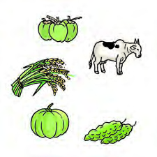<figcaption>Figure fig_ch04_p080_02 (Page 80)</figcaption></figure>
  <figure class="diagram-card" id="fig_ch04_p080_03"><figcaption>Figure fig_ch04_p080_03 (Page 80)</figcaption></figure>
  <figure class="diagram-card" id="fig_ch04_p080_04"><figcaption>Figure fig_ch04_p080_04 (Page 80)</figcaption></figure>
  <figure class="diagram-card" id="fig_ch04_p080_05"><figcaption>Figure fig_ch04_p080_05 (Page 80)</figcaption></figure>
  <figure class="diagram-card" id="fig_ch04_p080_06">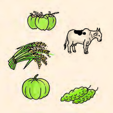<figcaption>Figure fig_ch04_p080_06 (Page 80)</figcaption></figure>
  <figure class="diagram-card" id="fig_ch04_p080_07"><figcaption>Figure fig_ch04_p080_07 (Page 80)</figcaption></figure>
  <figure class="diagram-card" id="fig_ch04_p080_08"><figcaption>Figure fig_ch04_p080_08 (Page 80)</figcaption></figure>
  <figure class="diagram-card" id="fig_ch04_p080_09"><figcaption>Figure fig_ch04_p080_09 (Page 80)</figcaption></figure>
  <figure class="diagram-card" id="fig_ch04_p080_10">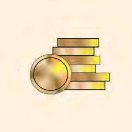<figcaption>Figure fig_ch04_p080_10 (Page 80)</figcaption></figure>
  <figure class="diagram-card" id="fig_ch04_p080_11">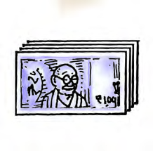<figcaption>Figure fig_ch04_p080_11 (Page 80)</figcaption></figure>
  <figure class="diagram-card" id="fig_ch04_p080_12">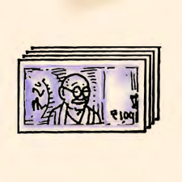<figcaption>Figure fig_ch04_p080_12 (Page 80)</figcaption></figure>
  <figure class="diagram-card" id="fig_ch04_p080_13"><figcaption>Figure fig_ch04_p080_13 (Page 80)</figcaption></figure>
  <div class="page-content">
    <p>80<br>‹šuc-<br>“›†›ŒĹ›Æ †›†›ų›Žų h ˆŽ›Œ›‚›sÇ Œ†•DZÅ mā¡†<br>š›Ž›ÚcŒ›s}ų›ĞĬš“s#<br>‚š¡’†Æs››Ž›Úųx›Ņc
†›Žœä›Úž<br>ƃšǡ›s§sšÅsÇ<br>ŠšÅĞÅiƹųāÇ<br>–ǴÅĴc<br>¢š—†šāÇ<br>s}š–ˆc<br>gs§¢ğš›s§ˆc<br>x›Ņc4.2<br>ˆĹ›¡źˆŽ›šŒc<br>ˆĹ›¡źˆŽ›šŒƂ⛍¡}f„DZvĞśÆƜuā‘¡}¢‚šÆ<br>sšÅ•›s“›‹“āÇ sųsš›sÇ ‚}ā› ˆ<br>“ǘÚ‘c<br>ˆŒš›<br>iˆ¢šu›ă›Žų<br>¢š—āÇ<br>‹DZŒš›Ĺ}ā›<br>¢ƀšÇ –ǴÅĴ“c “›“›…‚Žc ¢š—ā‘c ‚}Åų§ ¢š—†š<br>ā‘c ˆŒš› iˆ¢šu›ă ‚}ā› ¡ˆš‚“š pŽ iˆš…›<br>¡ų<br>†››Æ<br>sž}‚Æ<br>–­sŽDZƂ„Œš›<br>iˆ¢šu›Úš<br>¡Œų‚›†šÆ<br>s}š–ˆĹ›¢Ú§<br>⍓›âāÇ<br>⢌<br>Œš›  “›ˆ›¡ų f”c  sž}‚Æ Ə—Ĺš› Œšsc<br>–š¢ÿ‚›s“›„DZ<br>mƼš<br>¢Œts‘c<br>£s}ڝsc<br>¡xƪ<br>¢‚š¡} sšÅ§ ˆc eƒ“š ƃšǡ›s§ ˆc g¢ɇš›s§<br>ˆc<br>‚}ā›<br>gų<br>†ǰ<br>sšsc<br>ˆŽ›x¡ƀН<br>¡sšĬ›Ž›Úsc ¡xƭų Žœ‚›s‘›¢Ú§ˆcŽžˆšŦŽ¡ƀН</p>
  </div>
</section>
    </main>
    <footer>
      <div class="nav-bar"><a href="part_1_pages_4160.html">← Pages 41-60</a><a href="index.html">☰ Index</a><a href="part_1_pages_8196.html">Pages 81-96 →</a></div>
    </footer>
  </div>
</body>
</html>
